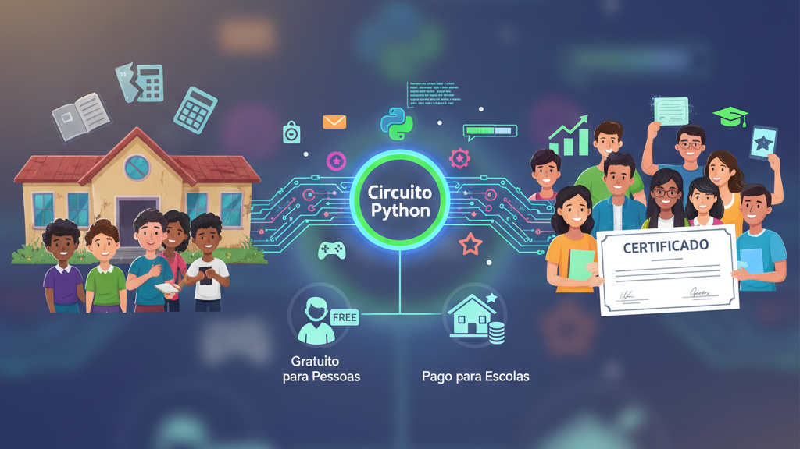

Circuito Ferradura: Democratizando a Programação no Brasil
Introdução: Programação Como Direito de Acesso
O Brasil forma poucos desenvolvedores em relação à demanda. Escolas públicas e privadas ainda tratam programação como matéria de nicho ou extracurricular; crianças e jovens sem acesso a curso pago ou a um computador em casa ficam fora do primeiro contato com código. O resultado é déficit de mão de obra técnica e exclusão digital: quem não aprende a "falar" com a máquina cedo fica dependente de quem fala.
O Circuito Ferradura é o produto da Cara Core pensado para o público infanto-juvenil: um curso de programação em Python para crianças e jovens, com versão gratuita para uso individual e modelo pago para escolas, gamificado e acessível. Este artigo fala do déficit de educação técnica no Brasil, do porquê de Python, dos modelos gratuito e pago, da gamificação e de como isso gera inclusão digital para o público infanto-juvenil.
1. O Déficit de Educação Técnica no Brasil
O mercado de tecnologia reclama de falta de desenvolvedores; universidades e escolas técnicas não dão conta sozinhas; bootcamps e cursos online cobram caro ou são voltados a adultos. Nas escolas de educação básica, programação ainda é exceção — quando existe, muitas vezes é superficial ou depende de um professor que "se vira". A lacuna atinge sobretudo crianças e jovens longe dos grandes centros ou sem renda para formação privada.
O déficit não é só de vagas; é de acesso ao primeiro contato na idade certa. Quem nunca viu um loop, uma condição ou uma função na infância ou na adolescência não sabe se gosta, não sabe se quer seguir. Democratizar é abrir essa porta para o público infanto-juvenil: conteúdo estruturado, em português, que funcione em máquina simples e que permita ao aluno decidir, depois, se quer aprofundar. O Circuito Ferradura entra nesse espaço.
2. Por Que Python
Python foi escolhido como primeiro idioma de código no Circuito por várias razões: sintaxe clara, menos cerimônia que outras linguagens, ampla adoção no mercado (dados, automação, web, ensino) e ecossistema rico de bibliotecas. Para crianças e jovens que estão começando, Python reduz a barreira entre "ideia" e "código que roda". O aluno vê resultado rápido e consegue evoluir sem se perder em detalhes de compilação ou de tipagem rígida no primeiro momento.
Além disso, Python é uma linguagem que o mercado brasileiro e global valorizam. Quem aprende no Circuito na infância ou na adolescência não está aprendendo uma ferramenta obsoleta; está construindo base para seguir em carreira técnica ou em uso cotidiano da programação. Acessibilidade e relevância andam juntas, e o público infanto-juvenil se beneficia de uma linguagem que continuará útil quando entrar no mercado.
3. O Modelo Gratuito para Uso Individual
O Circuito Ferradura oferece acesso gratuito para uso individual: crianças e jovens podem baixar o material ou o executável (conforme a oferta na loja do produto) e estudar por conta própria ou com apoio da família. A ideia é inclusão: não depender de instituição de ensino ou de orçamento para ter o primeiro contato com programação. O conteúdo cobre os fundamentos e a progressão típica de um curso introdutório para o público infanto-juvenil; o aluno avança no ritmo que puder.
Esse modelo atende ao curioso, ao que estuda em casa e a quem está testando se programação faz sentido. Sem custo de entrada, a barreira cai para famílias e jovens; com conteúdo em português e foco em Python, a curva de aprendizado fica acessível a crianças e adolescentes. O objetivo é que "não ter dinheiro para curso" deixe de ser motivo para nunca ter tentado.
4. O Modelo Pago para Escolas
Para escolas, o Circuito Ferradura é oferecido em modelo pago: licença que permite uso em sala de aula com o público infanto-juvenil, com conteúdo estruturado. A escola ganha um programa pronto, alinhado à ideia de primeiro idioma de código para crianças e jovens, e pode integrar a disciplina de programação ao currículo sem precisar montar tudo do zero. O modelo pago (R$ 5,00/aluno/mês) sustenta o desenvolvimento do produto e permite que a versão gratuita para uso individual continue existindo.
Para a instituição, é uma forma de oferecer educação técnica de qualidade para o público infanto-juvenil, com o material da Cara Core já estruturado e pronto para uso em sala de aula.
5. Gamificação e Acessibilidade
Gamificação no Circuito Ferradura significa usar elementos de jogo — desafios, progressão por níveis, feedback imediato — para manter crianças e jovens motivados e tornar a curva de aprendizado menos árida. Programação pode assustar no início; pequenas vitórias e objetivos claros ajudam o público infanto-juvenil a seguir em frente. O produto foi desenhado para que o estudante veja avanço e sinta que está "passando de fase" enquanto aprende variáveis, estruturas de controle e funções.
Acessibilidade também passa por interface e requisitos: o Circuito pode rodar em máquinas mais simples, e o conteúdo está em português. Crianças e jovens que não dominam inglês ou não têm computador de última geração não ficam excluídos. Democratizar é garantir que o produto seja utilizável pelo público infanto-juvenil no Brasil real.
6. Como Isso Cria Inclusão Digital
Inclusão digital não é só "ter internet". É ter capacidade de usar a tecnologia para criar, automatizar e resolver problemas. Crianças e jovens que aprendem a programar deixam de ser apenas consumidores de apps e passam a poder construir pequenas soluções, entender como sistemas funcionam e, no futuro, seguir carreira técnica. O Circuito Ferradura cria inclusão ao abrir a porta do primeiro idioma de código para o público infanto-juvenil que não teria acesso por curso caro ou por falta de oferta na escola.
O impacto é individual e coletivo: mais crianças e jovens com noção de programação significa mais candidatos ao mercado de tecnologia no amanhã e mais cidadãos capazes de entender e questionar o mundo digital. O produto da Cara Core não resolve sozinho o déficit de educação técnica do país, mas é uma peça concreta — curso para o público infanto-juvenil, modelo gratuito para uso individual, modelo para escolas — na direção da democratização.
Conclusão: Primeiro Idioma de Código
O Circuito Ferradura existe para democratizar a programação no Brasil para o público infanto-juvenil: déficit de educação técnica e exclusão digital são o problema; Python como primeiro idioma, modelo gratuito para uso individual, modelo pago para escolas (R$ 5,00/aluno/mês), gamificação e acessibilidade são a oferta. Crianças e jovens que usam o Circuito — em casa ou na escola — estão ganhando o primeiro idioma de código. E esse é o passo sem o qual o resto não começa.
Hashtags
Contato
- E-mail: suporte@caracore.com.br
- Site: www.caracore.com.br
- LinkedIn: Cara Core Informática
Conecte-se conosco no LinkedIn para mais conteúdos sobre Circuito Ferradura, educação e inclusão digital.
Seguir no LinkedIn
Artigo publicado em 25 de abril de 2026
© 2026 Cara Core Informática. Todos os direitos reservados.